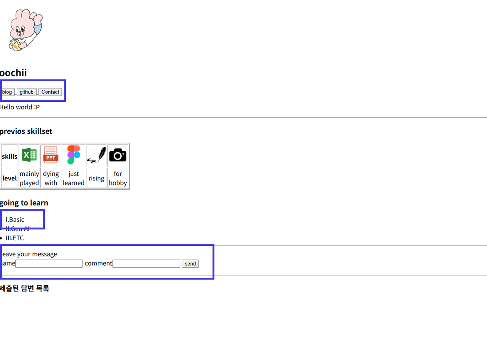
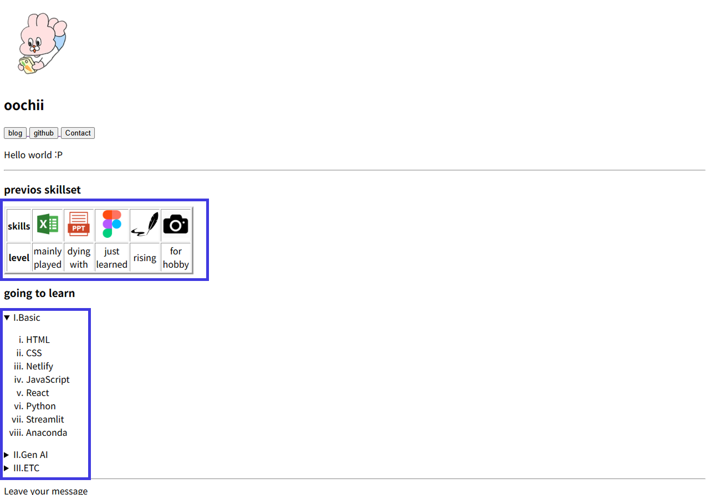

평소에는 상단 메인 내비게이션 바를 숨겨 비주얼을 해치지 않다가, 커서에 반응해 활성화되는 디자인이 인상적입니다.
제품의 강점을 슬롯 형태로 스크롤에 따라 내려가게 하되, 마지막 슬롯은 제자리에 멈추지 않고 중앙보다 더 위로 올라가게 해서 콘텐츠가 끝났음을 시각적으로 알려줍니다.
스크롤에 따라 선이 함께 이동하면서 사용자의 시선이 분산되지 않고 한 곳에 집중되도록 유도합니다.
흔한 막대(bar) 형태의 스크롤 인디케이터 대신 게이지 형태의 스크롤 디자인을 사용했습니다.
스크롤에 따라 이미지가 축소·확대되며 시선의 전환을 자연스럽게 유도합니다.


인터렉션 부분은 HTML만으로 클릭 등 사용자의 동작에 따라 웹페이지로 리다이렉팅하거나, 정보를 추가로 노출하거나, 제출 폼을 작성하는 정도를 간단히 구현해봤습니다. 다만 폼의 경우 구글 폼이 워낙 잘 만들어져 있어서, 추후 기능을 직접 구현할 때는 그만큼 정교하게 설계할 필요가 있어 보입니다.
리스팅은 정보를 단순히 나열하는 것이 아니라, 필요한 정보를 얼마나 노출하고 어떤 형태로 보여줄지에 따라 결과물이 꽤 달라진다는 것을 배웠습니다.
// 코드 placeholder 3
function category3() {
return "world";
}// 코드 placeholder 4
function category4() {
return "world";
}Q1. HTML에서 <h1> 태그는 문서 내에서 가장 큰 제목을 나타낼 때 사용한다.
Q2. CSS에서 글자 색상을 변경할 때 사용하는 속성(Property)의 이름은 text-color이다.
Q3. HTML에서 줄바꿈을 할 때 사용하는 <br> 태그는 반드시 닫는 태그(</br>)가 필요하다.
Q4. 하나의 HTML 요소(Element)에는 여러 개의 클래스(class)를 동시에 지정할 수 있다.
Q5. <a> 태그를 사용하여 다른 페이지로 이동하는 하이퍼링크를 만들 때, 연결할 웹 주소는 src 속성에 작성한다.
수고하셨습니다! 퀴즈 완료 🎉